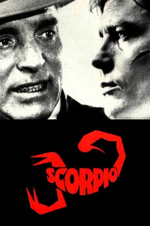

#10452 Scorpio, der Killer
Alternativ: Scorpio (Englischer Titel)
 
 IMDB-Wertung: 6.5 / 10
IMDB-Wertung: 6.5 / 10  Metascore: 0
Metascore: 0 
Scorpio ist der Spitzname des französischen Agenten Jean Laurier, der mit seinem Mentor Cross einen Auftrag erledigt. Im Auftrag der CIA soll Scorpio den des Doppelspiels verdächtigten Cross erledigen, weil er allein dessen Charakter und Taktik kennt. Cross entkommt zunächst und verliert seinen Kampfgeist, als der CIA seine Frau umbringt. Scorpio verliert seine Freundin Susan, die sich als Doppelagentin erweist. Scorpio tötet Cross. Als er sich in einer Tiefgarage bückt, um eine Katze zu streicheln, ist ein Zielfernrohr auf ihn angelegt.
Jahr: 1973
Dauer: 114 Minuten
FSK: 16
Land: USA Studio: United ArtistsTonspuren:
Untertitel:
Auflösung: 1080p (1920x1040) Größe: 7987 MB
Genre: Action, Thriller, Drama
Regisseur: Michael Winner
Drehbuch: David W. Rintels, Gerald Wilson, David W. Rintels
Soundtrack: Jerry Fielding
Darsteller:
 Burt Lancaster als Cross
Burt Lancaster als Cross Alain Delon als Jean 'Scorpio' Laurier
Alain Delon als Jean 'Scorpio' Laurier Paul Scofield als Zharkov
Paul Scofield als Zharkov John Colicos als McLeod
John Colicos als McLeod- Gayle Hunnicutt als Susan
 J.D. Cannon als Filchock
J.D. Cannon als Filchock- Joanne Linville als Sarah
- Mel Stewart als Pick
 Vladek Sheybal als Zemetkin
Vladek Sheybal als Zemetkin- Jack Colvin als Thief
 James Sikking als Harris
James Sikking als Harris Burke Byrnes als Morrison
Burke Byrnes als Morrison- William Smithers als Mitchell
- Shmuel Rodensky als Lang
- Celeste Yarnall als Helen Thomas
- Sandor Elès als Malkin
- Frederick Jaeger als Novins
- Robert Emhardt als Man in hotel
 Morgan Farley als
Morgan Farley als  Earl Cameron als Black employee in toilet (uncredited)
Earl Cameron als Black employee in toilet (uncredited)- Bill Nagy als The owner of the pet shop (uncredited)
 Shane Rimmer als Cop in Hotel (uncredited)
Shane Rimmer als Cop in Hotel (uncredited)- Richard Wyler als Agent killled by Zharkov in car (uncredited)
- Mary Maude als Anne
- Howard Morton als Heck Thomas
- George Mikell als Dor
- Woody Chambliss als (uncredited)
- Eric Vasberg als Emilio Rocco (uncredited)
Datei: X:\1973\Scorpio, der Killer (1973, FSK16, 1920x1040).mkv seit 09.01.2019
Festplatte: HD 1971-1979
 Es gibt insgesamt 30 Filme in der Gruppe '1973'
Es gibt insgesamt 30 Filme in der Gruppe '1973'